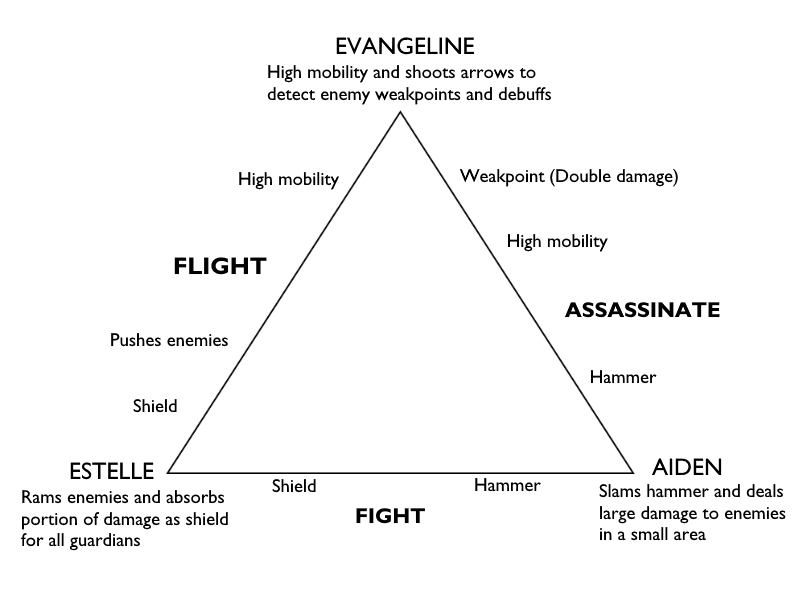
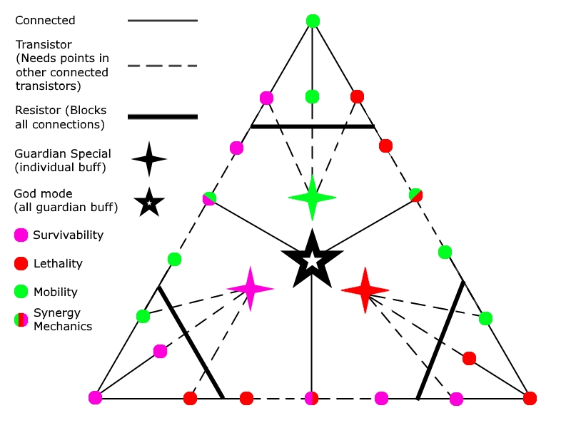

“Prophecy’s Chosen” is a 2D dungeon crawler game and passion project solely developed on Unity over the course of four months during my senior year at New York University.
In “Prophecy’s Chosen”, you control the soul of a child summoned by three powerful guardians who prophesy the forthcoming of a hero upon completion of a perilous journey in a ravenous dungeon. You are granted the choice to inherit one of the guardian’s powers that increase his/her survivability, lethality, or mobility, but there’s a catch. Bound to the prophecy is a rule: “the three guardians are not only to aid in the hero’s journey but also contracted to protect the child with their very lives. Should a guardian succeed to do so, the remaining guardians are to follow suit.”
The goal was to develop a game that creates situations where players would have to alternate or choose between conventional attack, move, and defend mechanics but not altogether. The targeted demographic was a more competitive audience as perma-death mechanics and difficult obstacles incentivize more strategic awareness of min-maxing mechanics and synergies.
As the sole programmer and designer, it was my responsibility to test the efficiency of this idea into a playable experience that players can use to provide reliable criticisms and feedback. By the end of May, the game was playtested and showcased amongst hundreds of people where overall reception was met with praise on minimal bugs and optimism for the game’s future.
Some personal achievements include the implementation of modular enemy prefabs and scripts for simple enemy creation and diversity, intuitive controls and movement, adaptive level design, and visual designs that identify characters with minimal art.
WASD - Movement
SPACE - Jump
Mouse Left Button - Special attack
1 - Switch to Estelle
2 - Switch to Aiden
3 - Switch to Evangeline
All guardians have their own health bar, ability, and movement, each balanced according to their strengths in survivability, lethality, and mobility. When I say the child is inheriting the guardian's powers, I mean it from a programming perspective as well. All variables and functions for each guardian's health, ability, and movement are publicly referenced by the child object, allowing the player to essentially play as that guardian seamlessly. This makes it convenient for guardian death which is a simple matter of shutting off that script, leaving the child object with its own health bar, no abilities, but high mobility. The reason for this is to reward players who continue to progress by spawning shrines deeper into the level that allow the revival of one fallen guardian.
Estelle is a gentle, motherly figure whose motivation to protect the prophecy's chosen comes from her will to preserve all creations of God. When inheriting Estelle's powers, the child is given a lateral charge ability that immediately activates defense mode for a brief period. During defense mode, the child inherits Estelle's draining ability which absorbs damage from the first collided enemy into a decaying shield before exploding on impact, shoving and damaging other nearby enemies. The shield persists even after switching to another guardian until it fully decays. Defense mode will also persist if the child doesn't collide with an enemy, but will still release an explosion after some time.
As a guardian specialized in survivability, Estelle is designed with defensive mechanics with limited offensive and mobile potential.
Aiden is a brutish warrior who believe certain creations are not perfect visions of God and must thoroughly be punished. He adopts the primal instinct to attack mindlessly. To inherit his raw strength, the child must learn to not fear mortality as each swing of his awesome Hammer of Wrath not only sends enemies flying, but also himself, making it useful for climbing towering structures. Should enemies dare to stand in the way of the prophecy, they are to first make it past Aiden's divine judgement.
Aiden was designed to follow the conventional desire to measure progress through raw killing power, or lethality. Low health and mobility was an appropriate counter-balance to both the game and his character as he is meant to played recklessly. Coupling his strength with Estelle's shield is heavily recommended in min-maxing the child's survivability and lethality.
Evangeline is a curious adventurer and God's journalist who finds solace learning about God's world. Exploring all walks of life, she takes advantage of her agile movement, double-jump and night vision to make up for her low vitality. She also brandishes a handcrafted bow and quiver with confidence despite having minimal combat experience. Manufactured from the finest raw materials that God has to offer, Evangeline's arrows do not kill, but are infused with energy that allows her to see through them. Every arrow she shoots is another eyeball, allowing her to study her surroundings and hostilities. When enemies are in range of or hit by her arrows, she attains True Sight, exposing their position, weak points, and potential curses. Attacking the exposed weak points will extremely increase damage output, especially with Aiden's hammer. To be humbled by God's gift and inherit these powers is a privilege even for the prophesied hero.
Evangeline is definitely one of the more ambitious characters and designs in the game as the desired playstyle for her isn't as conventional as defending or attacking. Initially her role was to be a characterized tutorial, offering her "knowledge of the world" to the player in a seamless and more narrative fashion. This idea was eventually scrapped, however, as I preferred players to take a more hands-on approach to learning the mechanics rather than having a persisting character explicitly explain it. To make mobility feel as empowering as the conventional attack and defend mechanics, I added curse mechanics and a "look" feature that allows you to check your surroundings by mouse to complement her night vision and arrow play. These features allow players not only to gain preemptive knowledge of obstacles hidden in the dark, but also adds a layer of counterplay and strategy that only Evangeline could supply.
"Curses" are debuffs that the child and guardians can be inflicted by when taking damage from enemies. They can be blocked by Estelle's active shield or temporarily nullified by switching to another guardian (unless LOCKED or SWITCHED). Debuffs can stack if players are hit by multiple enemies with different debuffs or have its hidden timer reset if hit by the same debuff.
Though enemies each get only one debuff (including NONE) and hidden duration, they can be designed to detrimental effect due to their modular makeup. Enemies are created from a single block prefab with a movement and collision script. The movement script takes in an "aggression level" variable from 1-10, which controls an enemy's likeliness to detect and chase a player as well as the rate of change in its idle movement. This allows me to create weaker but more agile "zerglings" with a high aggression level, or slower but stronger "elites" with a lower aggression level. This coupled with a collision script that gives me full access to its damage, rigidbody, health, and debuff type allows me to create a diverse cast of enemies and even bosses.
Towards the end of the prototype video, you get to witness a boss fight with "Marilith", a powerful, six-armed demon designed in homage to its origin in Dungeons and Dragon. Its arms are composed of five "elite" enemies each equipped with one of the five debuffs and a sixth being an invulnerable weak spot that exposes Maralith's health bar once all five arms are destroyed. In the beginning, Maralith will simply creep towards the player, but as each arm gets destroyed, the remaining arms begin to spin faster and Maralith's aggression level also begins to increment. As one can tell already, Maralith main body is also an enemy block prefab, but is modulated to instead be circular with a separate script managing the arms. Maralith tests players' ability to use survivability, lethality, and mobility in rapid succession to capitalize synergistic elements.
Diagram framing some possible synergies
There was a very interesting comprehension of the game's mechanics based on how experienced a player was in gaming. Non-gamers overall praised the game's functionality, quality, endearing mechanics, and tag-team concept, but expressed difficulty understanding the goals and controls of the game without my support. The gamers had no problem understanding the controls at all and were actually inventing new ways to deepen each guardian's mechanics. For example, the knock-up from Aiden's hammer was never intended to be used as a mobility mechanic to climb walls, yet players were accidentally depending on it. They criticized, however, the needless complexity of the tag-team mechanic and that the game will actually feel deeper had each character not been restricted to their design.
One that still burns to my memory leading this discussion was where one playtester felt that the extra step of having to switch to each guardian was not rewarding. I didn't believe this reasoning at first as I had specifically designed each guardian to fill in where another couldn't, but it started to make sense the more I observed playtesters duke it out against Maralith. The difficulty curve was a primary selling point in the showcase and I accurately predicted that most players could not defeat Maralith. What I failed to realize, however, is how these players were losing. Though there were a handful of players that weren't making use of synergies to its full effect, some of the players that did but still failed felt no reason to replay the game as they have already learned every capability the game has to offer. In essence, the depth of the game plateaued once players exhausted their freedom.
Switching guardians was a learning process at first but immediately flipped to becoming a chore, exhibiting a now blatant flaw in the game's design. I had become too focused on the game's functionality and my desire for perfection has blinded me to replayability and fun. I had designed the guardians to depend on each other so much that players were basically incapable of having fun with just one of them. Why stick with Evangeline if Aiden deals more damage to weak spots? Why switch to Aiden when there are no enemies in front of me? Why should I find Estelle's slam mechanic fun when it's all for the purpose of keeping the other two alive? The prophecy just isn't worth the extra steps. It was then when I realized that the reason I made this game in the first place was because it was something that I thought would be fun to play.
For my game to truly reach its final form, I need to translate these criticisms to solutions. There will be an overhaul to Estelle, Aiden, and Evangeline's mechanics to cater towards user demand for a more enjoyable product. The current focus is to deepen the combat system by devising a progression system that makes each guardian independent to the others, while rewarding synergies as an optional trade-off. One example is a skill tree that has players choosing between adding points to a guardian's survivability, lethality, or mobility or a separate branch that unlocks new mechanics that combines the guardian's strengths.
A theory crafted skill tree for potential implementation